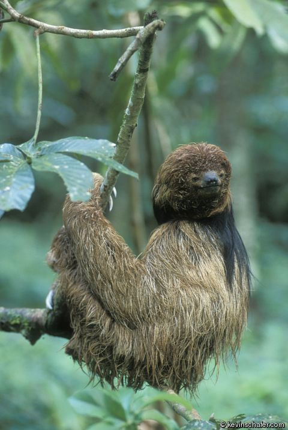
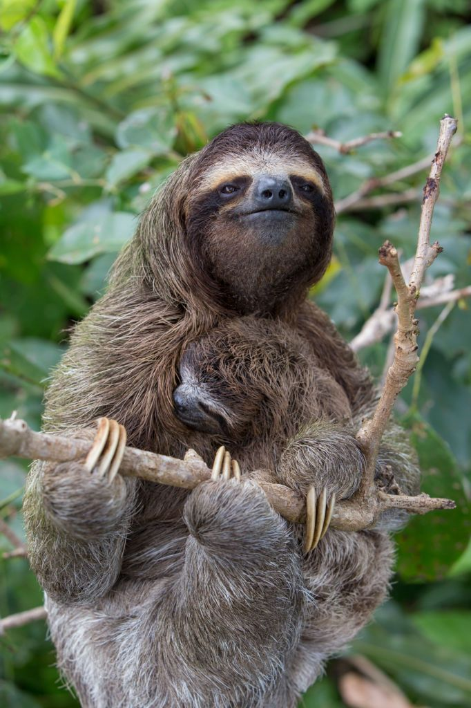
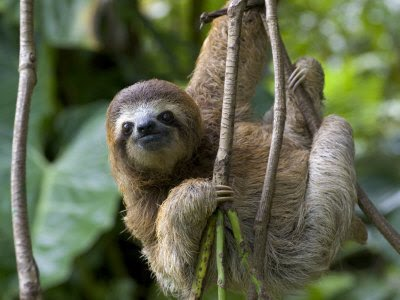
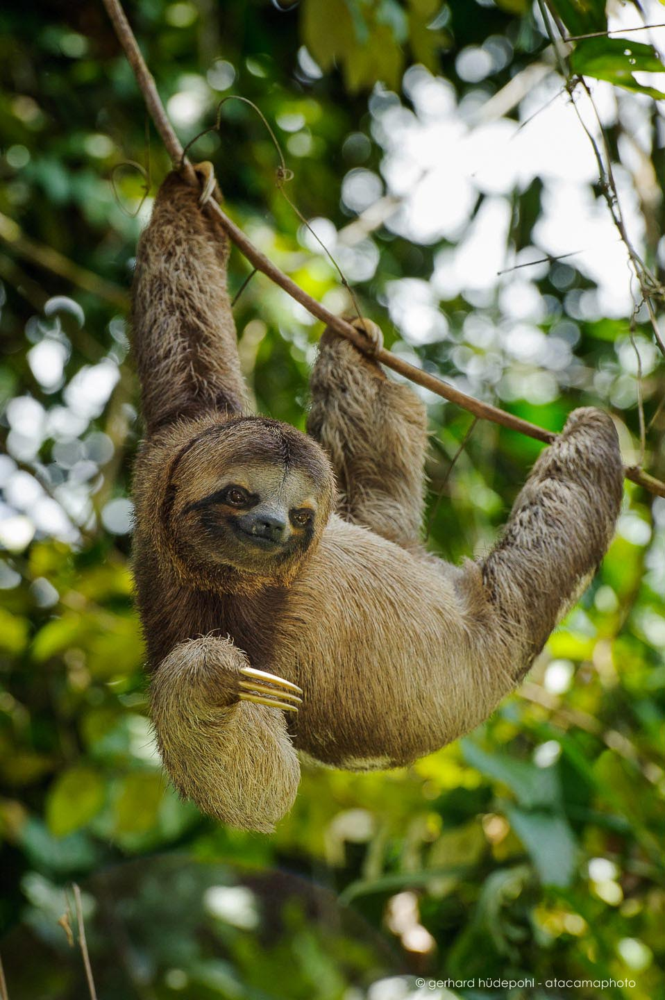
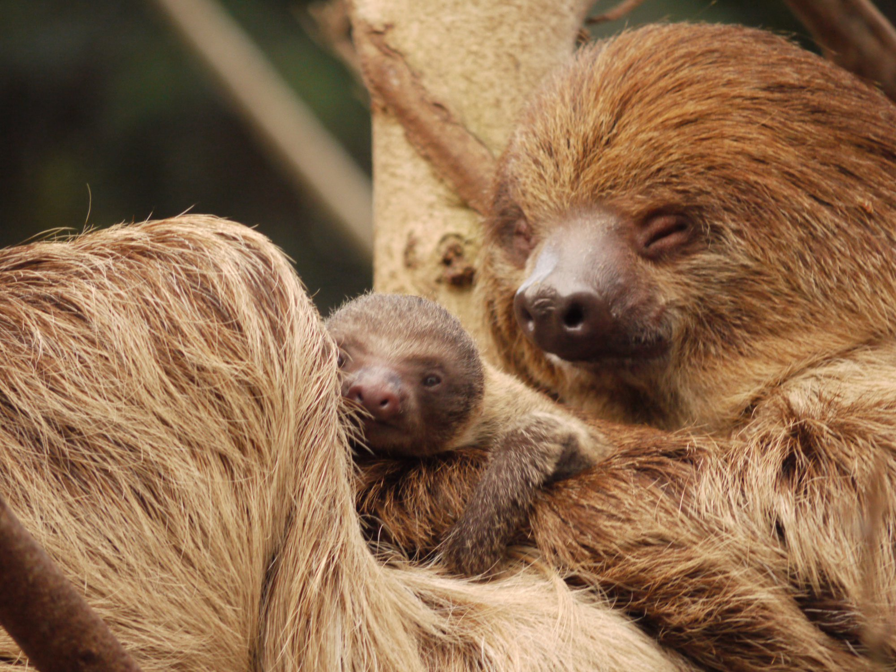
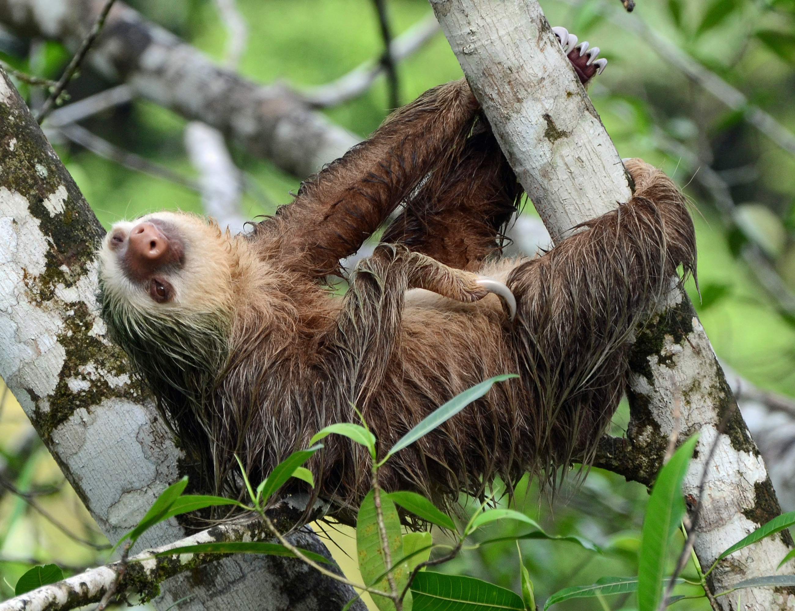

| Maned Sloth |
Bradypus Torquatus |
Three-toed |
Brazil |
Vulnerable |
 |
| Pygmy Sloth |
Bradypus Pygmaeus |
Three-toed |
Isla Escudo de Veraguas, Panama |
Critically Endangered |
 |
| Pale-throated Sloth |
Bradypus Tridactylus |
Three-toed |
Northern South America |
Least Concern |
 |
| Brown-throated Sloth |
Bradypus Variegatus |
Three-toed |
Central and South America |
Least Concern |
 |
| Linnaeus's Sloth |
Choloepus Didactylus |
Two-toed |
South America |
Least Concern |
 |
| Hoffmann's Sloth |
Choloepus Hoffmanni |
Two-toed |
Central and South America |
Least Concern |
 |